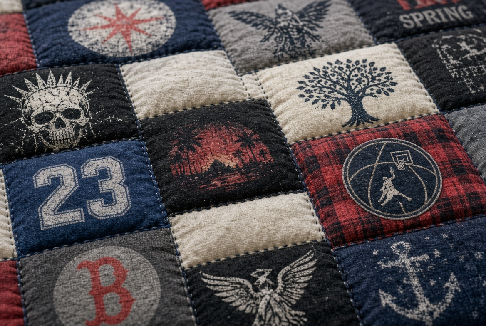
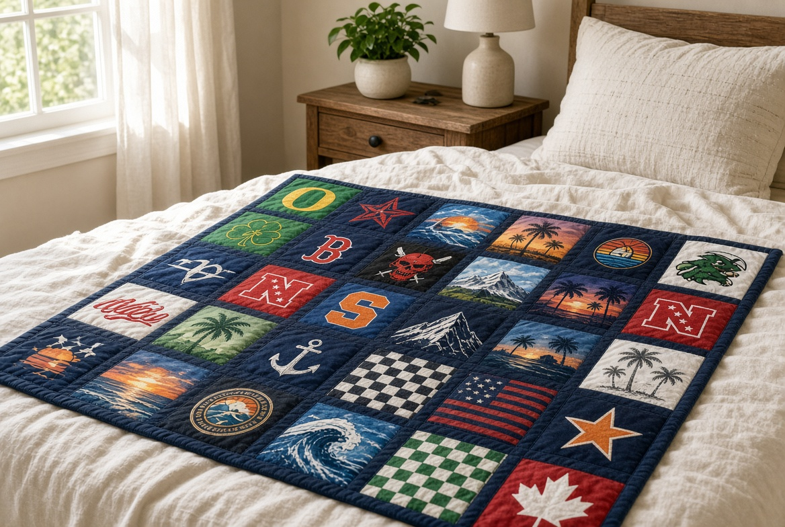
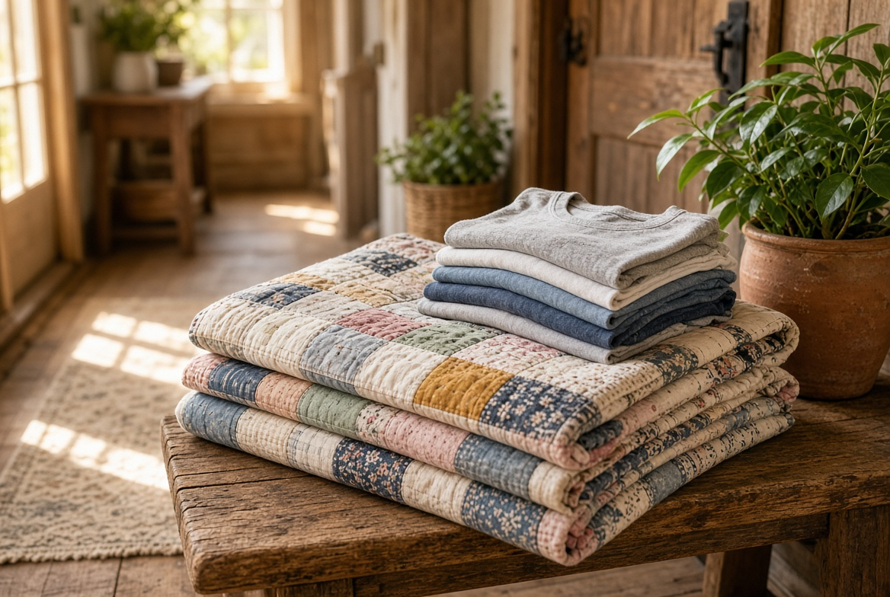
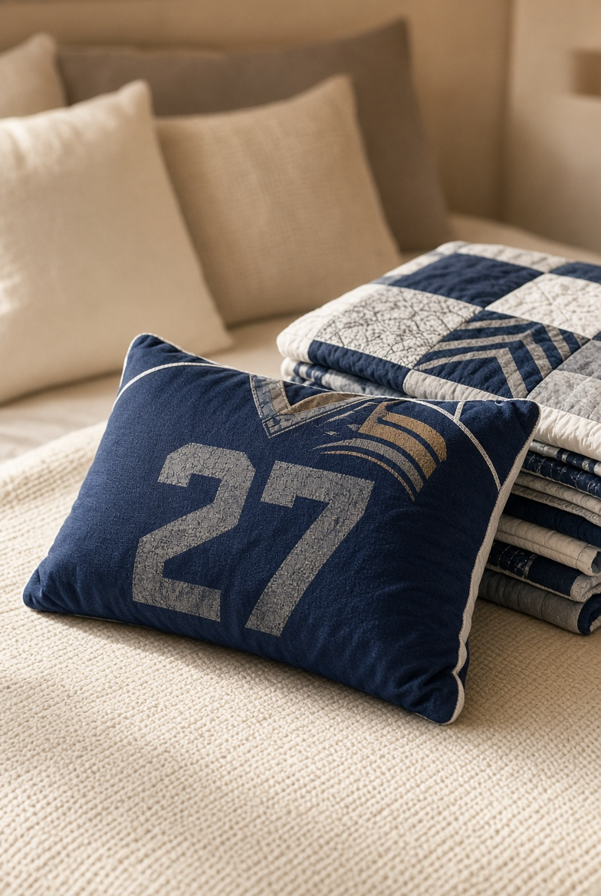
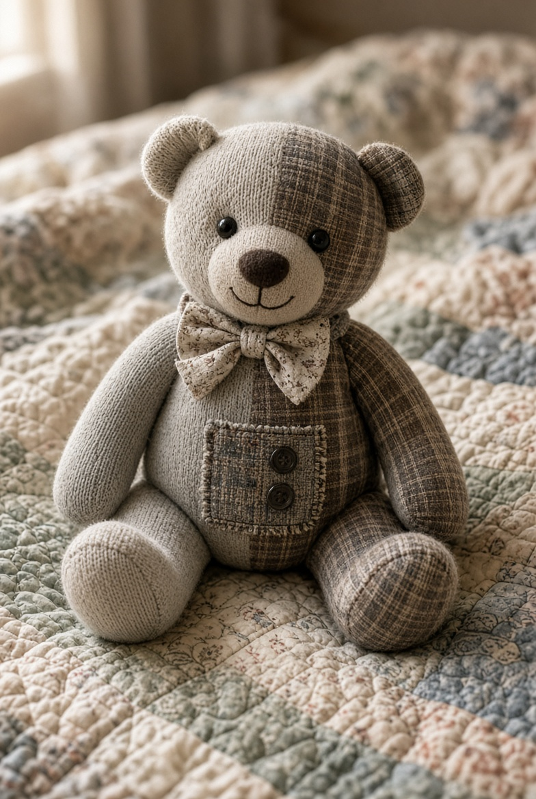
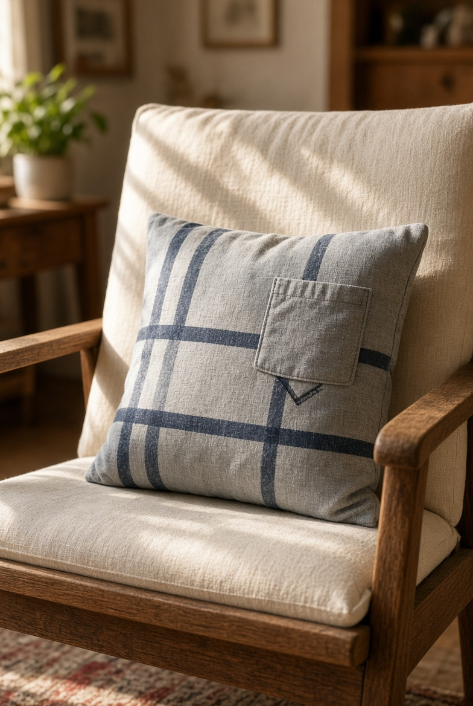
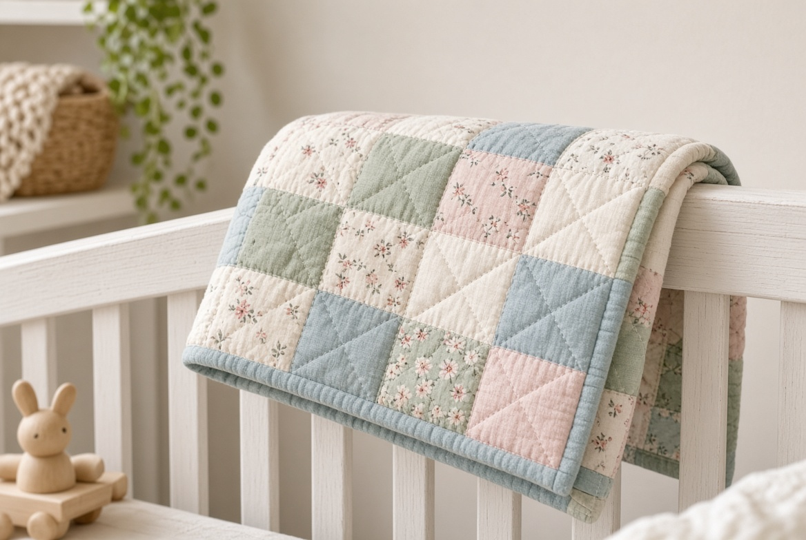

Memory Quilts
Turn a collection of favorite T-shirts and clothing into a one-of-a-kind quilt your family can use for years to come.
Explore Memory Quilts
Handmade memory quilts and keepsakes created from the shirts and clothing that tell your story.
Memory Quilts · Memory Pillows · Memory Bears
The memories are already there
Sports seasons. School years. Dance recitals. Military service. Concerts. Vacations. A lifetime of favorite shirts.
Instead of sitting in a closet or eventually being thrown away, those memories can become something your family will actually use, enjoy, and treasure.
Whether you want a full-size memory quilt, a keepsake pillow, or a memory bear made from a loved one’s clothing, there’s a way to turn meaningful pieces into something you can hold onto.
You don’t have to throw away the memories just because you’re ready to get them out of the closet.

What I make

Turn a collection of favorite T-shirts and clothing into a one-of-a-kind quilt your family can use for years to come.
Explore Memory Quilts
A smaller way to preserve a favorite shirt, jersey, or piece of meaningful clothing. Perfect for a bed, chair, nursery, or special keepsake.
Explore Memory Keepsakes
Turn meaningful clothing into a huggable keepsake you can actually hold onto. A special way to preserve clothing from childhood, sports, loved ones, or important chapters of life.
Explore Memory KeepsakesEvery piece is handmade with care and created from the clothing that makes it meaningful to you.
Portfolio
From a box of shirts to something your family can actually use, hold, and treasure.


How it works
Decide whether a quilt, pillow, bear, or combination of keepsakes is right for your memories.
Pull together the shirts and clothing you want to preserve. I’ll help you determine what you’ll need for your project.
You don’t need to know anything about sewing or quilting. That’s my part.
Your finished keepsake is carefully packaged and ready to become part of your home—not another box in storage.
Pricing
$25 per shirt
15-shirt minimum. Most quilts use approximately 25 shirts.
Memory pillows and bears are available as individual keepsakes or can be created alongside a memory quilt.
Add-ons and personalization available:
From the worktable
“I handed over a box of my dad’s shirts and got back something the whole family actually fights over on the couch. It feels like him without sitting in a closet.”
A memorial quilt familyUpstate South Carolina
“Twelve years of sports, band, and field trips—finally off the hanger and on the bed. She made sense of a pile I didn’t know what to do with.”
A school-years quiltOconee County
“The bear is made from my grandmother’s robe. My daughter sleeps with it. That is the whole point.”
A memory bearA keepsake for the next generation
Swap these in with your own customer words and photos when you’re ready.
Give those memories a second life
You don’t have to decide whether to keep the clothes or let them go.
Turn them into something you’ll actually use, hold, and treasure.
Memory quilts. Memory pillows. Memory bears.